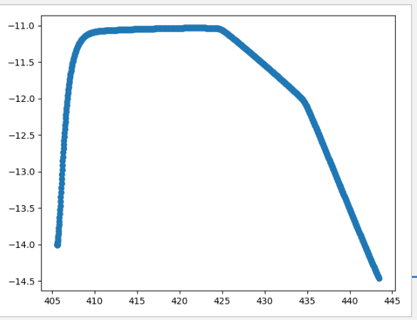

路线规划¶
此示例在 Carla 模拟环境中，使用 RRT 路径规划和 PID 控制进行自动驾驶车辆的路径跟踪， RRT 算法能够在复杂的环境中快速找到从起点到终点的路径，同时避开障碍物； PID 控制器根据路径的曲率和车辆的位置调整油门、刹车和方向盘，确保车辆能够按照规划的路径行驶。
环境要求¶
-
Python 3.7
-
CARLA 模拟环境
-
安装必要的Python库
-
湖工商场景(WindowsNoEditor)
导入CARLA模块¶
导入CARLA模块，并添加必要的路径。
try:
sys.path.append(glob.glob('../carla/dist/carla-*%d.%d-%s.egg' % (
sys.version_info.major,
sys.version_info.minor,
'win-amd64' if os.name == 'nt' else 'linux-x86_64'))[0])
import carla
except IndexError:
pass
RednerObject 类¶
该类主要用于报错和传递 pygame 对象
class RenderObject(object):
def __init__(self, width, height):
init_image = np.random.randint(0, 255, (height, width, 3), dtype='uint8')
self.surface = pygame.surfarray.make_surface(init_image.swapaxes(0, 1))
pygame_callback 函数¶
相机传感器回调函数，将相机原始数据转换为2D RGB图像，并应用于 Pygame 。
def pygame_callback(data, obj):
img = np.reshape(np.copy(data.raw_data), (data.height, data.width, 4))
img = img[:, :, :3]
img = img[:, :, ::-1]
obj.surface = pygame.surfarray.make_surface(img.swapaxes(0, 1))
CARLA_world 类¶
该类用于连接 Carla 服务器，设置同步模式，并管理车辆和相机。
class CARLA_world:
def __init__(self):
self.client = carla.Client('localhost', 2000)
self.client.set_timeout(120.0)
self.carla_world = self.client.get_world()
self.map = self.carla_world.get_map()
print("WORLD READY")
settings = self.carla_world.get_settings()
settings.synchronous_mode = True
settings.fixed_delta_seconds = 0.02
self.carla_world.apply_settings(settings)
self.spectator = self.carla_world.get_spectator()
self.vehicles = []
self.ego_vehicle = None
主程序¶
初始化 Carla 世界对象¶
创建 Carla 世界实例，设置车辆的生成点，生成自车和障碍车辆。
CARLA_world = CARLA_world()
spawn_points = CARLA_world.map.get_spawn_points()
target_speed = 3.0
v_obs = 3.0
spawn_point1 = carla.Transform(carla.Location(x=428, y=-51.9, z=0.3), carla.Rotation(yaw=89))
blueprint_library = CARLA_world.carla_world.get_blueprint_library()
bp1 = blueprint_library.filter("model3")[0]
vehicle1 = CARLA_world.carla_world.spawn_actor(bp1, spawn_point1)
CARLA_world.vehicles.append(vehicle1)
spawn_point3 = carla.Transform(carla.Location(x=404, y=-14, z=0.3), carla.Rotation(yaw=0))
bp3 = blueprint_library.filter("model3")[0]
CARLA_world.ego_vehicle = CARLA_world.carla_world.spawn_actor(bp3, spawn_point3)
初始化相机¶
将相机附加到自车上，并设置回调函数处理相机图像。
camera_init_trans = carla.Transform(carla.Location(x=-10, y=-4, z=3), carla.Rotation(pitch=-20))
camera_bp = CARLA_world.carla_world.get_blueprint_library().find('sensor.camera.rgb')
camera_bp.set_attribute('image_size_x', str(VIEW_WIDTH))
camera_bp.set_attribute('image_size_y', str(VIEW_HEIGHT))
camera_bp.set_attribute('fov', str(VIEW_FOV))
camera = CARLA_world.carla_world.spawn_actor(camera_bp, camera_init_trans, attach_to=CARLA_world.ego_vehicle)
renderObject = RenderObject(VIEW_WIDTH, VIEW_HEIGHT)
camera.listen(lambda image: pygame_callback(image, renderObject))
初始化 Pygame¶
初始化Pygame窗口，并设置相应标题。
pygame.init()
gameDisplay = pygame.display.set_mode((VIEW_WIDTH, VIEW_HEIGHT), pygame.HWSURFACE | pygame.DOUBLEBUF)
pygame.display.set_caption("Camera View")
轨迹规划和控制¶
使用RRT算法进行轨迹规划，并通过PID控制器进行车辆路径跟踪。
goal = CARLA_world.map.get_waypoint(carla.Location(x=444, y=-14), project_to_road=True)
CARLA_world.carla_world.tick()
trans = CARLA_world.vehicles[0].get_transform()
v_obs = 7.8
obstacles = [trans, v_obs]
RRT_planner = RRT_VO(CARLA_world, goal, obstacles)
RRT_planner.RRT_star(n_pts=1000)
path = RRT_planner.path
path_x = []
path_y = []
trans = CARLA_world.ego_vehicle.get_transform()
thetai = trans.rotation.yaw * math.pi / 180
final_theta = thetai
for i in range(len(path) - 1):
if i == len(path) - 2:
thetaf = final_theta
else:
x1, y1 = path[i + 1].x, path[i + 1].y
x2, y2 = path[i + 2].x, path[i + 2].y
thetaf = math.atan2((y2 - y1), (x2 - x1))
primitive = motion_primitive(thetai, thetaf, path[i].x,
path[i + 1].x, path[i].y,
path[i + 1].y)
primitive.cubic_T_Matrix()
primitive.trajectory()
pos_x, pos_y = primitive.get_path(0.05)
path_x += pos_x
path_y += pos_y
thetai = thetaf
循环移动¶
在 Pygame 窗口中显示相机视角，并根据RRT规划的路径控制车辆移动。
controller = VehiclePIDController(CARLA_world.ego_vehicle, [1.0, 0.05, 0.1], [0.5, 0.05, 0.1])
controller_obs = VehiclePIDController(CARLA_world.vehicles[0], [1.0, 0.05, 0.1], [0.5, 0.05, 0.1])
actual_x = []
actual_y = []
ti = time.time()
for i in range(len(path_x) - 1):
trans = CARLA_world.ego_vehicle.get_transform()
loc_x, loc_y = trans.location.x, trans.location.y
w_x, w_y = path_x[i], path_y[i]
w_x2, w_y2 = path_x[i + 1], path_y[i + 1]
phi = math.atan2((w_y2 - w_y), (w_x2 - w_x))
physics = CARLA_world.ego_vehicle.get_physics_control()
wheels = physics.wheels
wheel_F_x = (wheels[0].position.x + wheels[1].position.x) / 200
wheel_F_y = (wheels[0].position.y + wheels[1].position.y) / 200
while ((wheel_F_x - w_x2) ** 2 + (wheel_F_y - w_y2) ** 2) ** 0.5 >= 0.5:
control = controller.run_step(RRT_planner.v * 3.6 / 3)
control_obs = controller_obs.run_step(v_obs * 3.6 / 3)
p1 = np.array([w_x, w_y])
p2 = np.array([w_x2, w_y2])
p3 = np.array([wheel_F_x, wheel_F_y])
trans = CARLA_world.ego_vehicle.get_transform()
yaw = trans.rotation.yaw
phi = math.atan2((w_y2 - w_y), (w_x2 - w_x)) - yaw * (math.pi / 180)
d = np.cross(p2 - p1, p3 - p1) / np.linalg.norm(p2 - p1)
kp = 3
ks = 0.2
Vel = CARLA_world.ego_vehicle.get_velocity()
v = math.sqrt(Vel.x ** 2 + Vel.y ** 2)
control.steer = (-math.atan2(kp * d,
轨迹如下：图中蓝色的曲线表示车辆从起点到终点的行驶路径。从图中可以看出，车辆先是沿着x轴向右行驶，然后检测到障碍物后开始向左下方转弯，最后到达终点。
